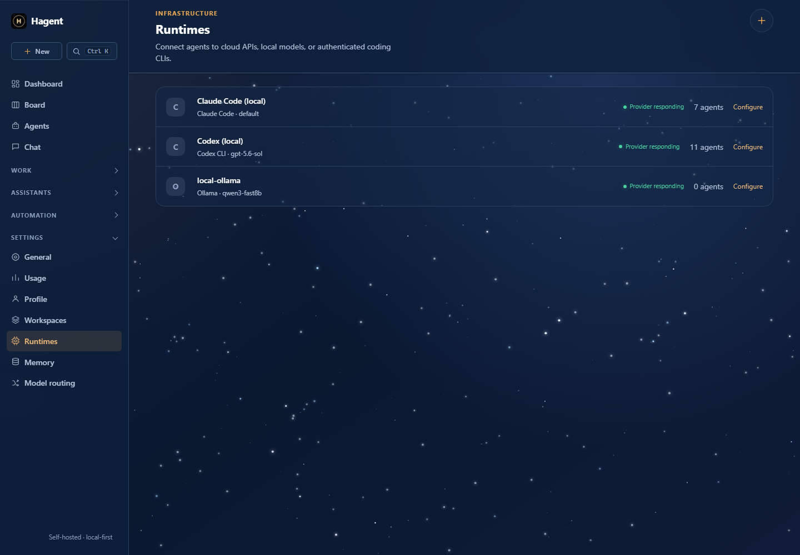
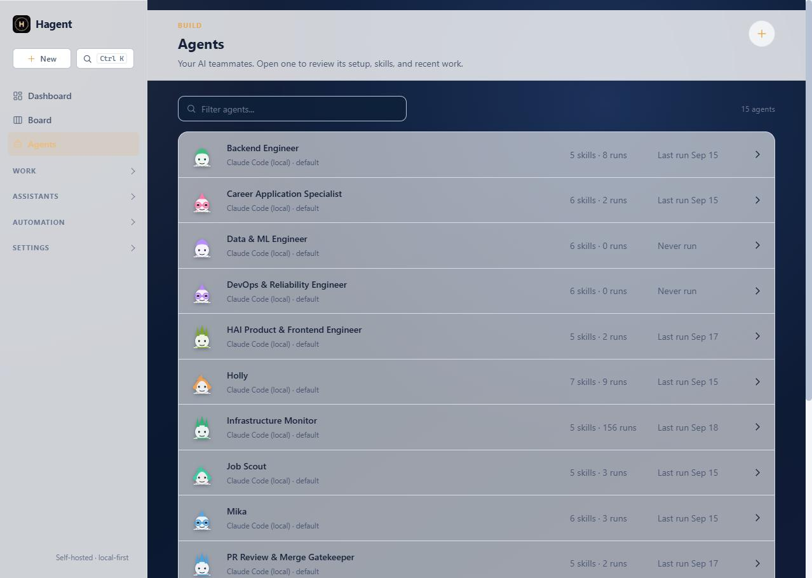
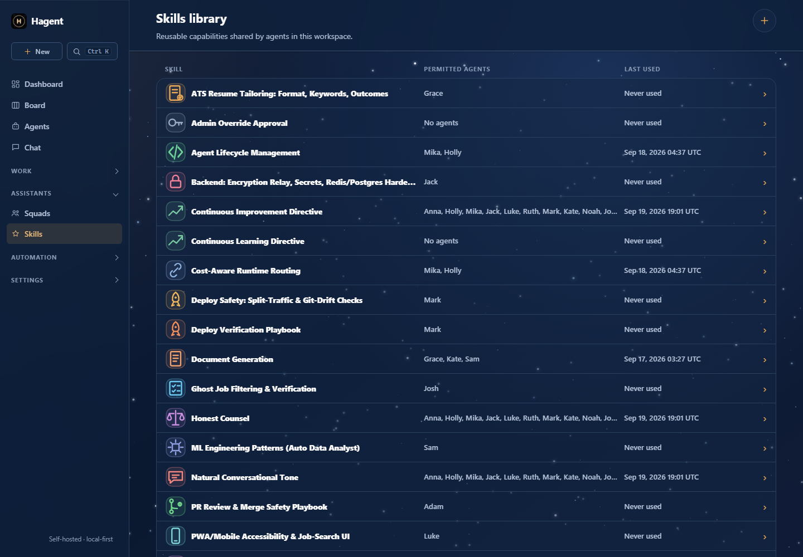
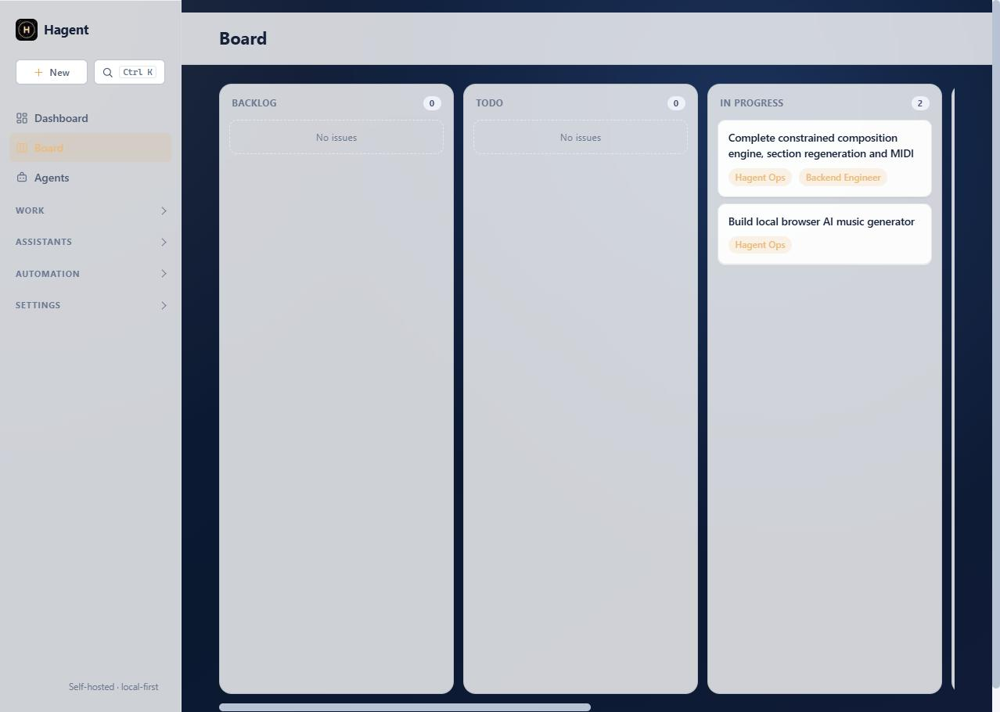
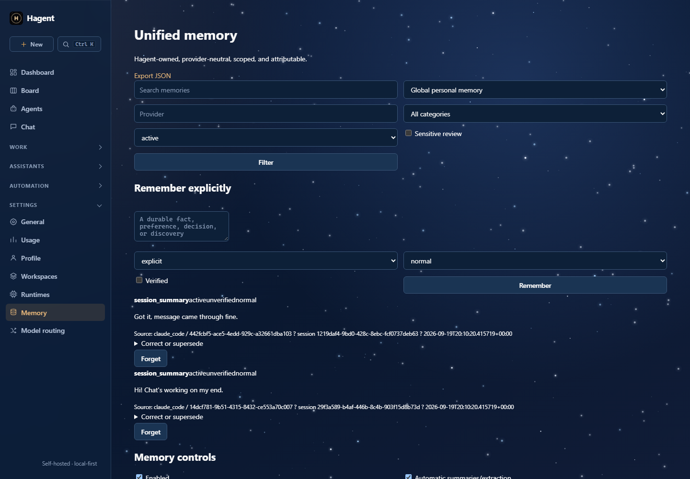

1. Add a runtime
A runtime is the model or AI tool an agent calls. Go to Runtimes → New runtime, choose the provider, select or type the exact model, and run the health check.
Local and private
Use Ollama or LM Studio. No per-token API bill, but model speed depends on your hardware.
Cloud or installed CLI
Use an API provider for broad model choice, or reuse Codex/Claude/Gemini CLI authentication already on your device.
{kind=link}

2. Create a specialist
Open Agents → New agent. Give it a clear designation such as “Frontend engineer,” a concrete operating description, and the runtime you just tested. Add a backup runtime if availability matters.

3. Attach a reusable skill
Skills are instructions and supporting files shared across agents. Start small: create a “Code review” skill that states your quality bar, then attach it to the agent.
{kind=link}

4. Create a project
Projects group issues, resources, and optionally a local repository. Use one project per product or sustained objective. Add its repository path only when the agent genuinely needs code access.
5. Write an issue the agent can finish
Good issues contain an outcome, boundaries, acceptance checks, and relevant links. Assigning an issue can queue its agent automatically.
Outcome: Add a responsive pricing section. Constraints: Reuse the existing design tokens. Do not add dependencies. Acceptance: Mobile and desktop layouts pass; existing tests remain green.

6. Review the run
Open the issue to inspect prompts, output, runtime usage, comments, and failure history. Use approvals for higher-risk work. A verifier agent can reject weak results and send actionable feedback back into the workflow.
7. Use memory intentionally
Canonical memory stores provider-neutral facts and preferences with workspace/user scope. Skill lessons store technique-specific improvements. Treat both as operational context: review them, keep secrets out, and remove stale information.
{kind=link}

8. Automate only after the manual loop works
Once an issue type reliably succeeds, create an Autopilot schedule or filter. Keep approval enabled for sensitive tasks, cap concurrency, and use a dedicated OS account or isolated worker for terminal-enabled agents.